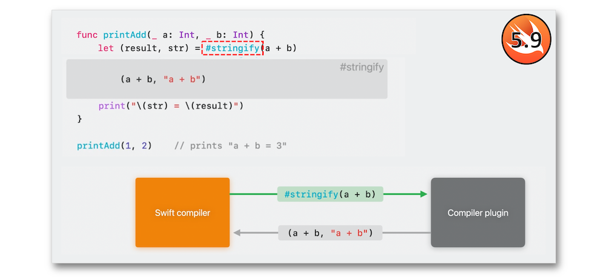

WWDC 2023: Swift macros
Find hereafter a detailed summary of two videos that belong to a taxonomy of some WWDC footages.
The original videos is available on the Apple official website (session 10166, session 10167).
"Discover how Swift macros can help you reduce boilerplate in your codebase and adopt complex features more easily. Learn how macros can analyze code, emit rich compiler errors to guide developers towards correct usage, and generate new code that is automatically incorporated back into your project. We'll also take you through important concepts like macro roles, compiler plugins, and syntax trees."
"Discover how you can use Swift macros to make your codebase more expressive and easier to read. Code along as we explore how macros can help you avoid writing repetitive code and find out how to use them in your app. We'll share the building blocks of a macro, show you how to test it, and take you through how you can emit compilation errors from macros."
Hereafter, the underlined elements lead directly to the playback of the WWDC video at the appropriate moment.
The basics #
The numerous reasons for introducing the macros with Swift 5.9 are all different but head alltogether towards the simplicity of code.
The design goals of these macros are fourthfold.
Two kinds of macros may be used: the freestanding macros...
... and the attached macros.
Before using a macro, the incoming parameters are validated and the error warnings may be taken in to account.
The code behind a macro may be reviewed thanks to the Xcode new features.
A dedicated compiler plugin is assigned to the macro expansion that's added as code to the program logic.

And all that new functioning relies on a basic macro declaration.
The roles #
The set of rules that handle responsabilities areas of a macro is called a role.
The roles for creating attached and freestanding macros are listed below.

This role is used to create one or more declarations.
This role adds extra declarations to the existing ones.
This role is meant for macros that handle variables and subscripts for creating accessors.
The goal of this role is to add some attributes to an existing type.
The role composition highlighted in this example is explained below, after the macro roles introduction.
Through this role, new declarations may be added to the type the macro is applied to.
This role aims at adding a conformance to a protocol.
The role composition should be used for creating macros in order to enrich their range usage and to avoid boilerplate code.
The implementation #
When a macro has to be used, the compiler creates a process in a secure sandbox where a plugin is launched to get the original code through a potential external macro.
The source code is then parsed into a SwiftSyntax tree...
... that highlights its own types including nodes that may be tokens or just have child nodes as properties.
Libraries #
To fully support the SwiftSyntax tree, dedicated libraires should be imported:
- SwiftSyntax representing the source code as a tree structure.
- SwiftSyntaxMacros dealing with necessary types and protocols for macros.
- SwiftSyntaxBuilder supporting the new generated code through the syntax trees.
Correct writing #
Unlike many languages that hold hygienic macro systems, Swift handles the name collisions through a dedicated method to be used.
Moreover, the names specifiers that can be used as arguments in macros are fivefold.
Should the macros be reliable, it's important some rules be followed so as not to encounter outlandish behaviors.
Testing #
Testing macros should be one of the essential milestones of the development that relies on a simple code structure.
Detailed example #
Before diving into the different steps for creating a macro, let's look into the Xcode environment to find out some new features regarding this context.
The following phases are meant to be automatically generating an initializer with a macro:
-
Declare a macro ⟹ 🎬
-
Implement a macro ⟹ 🎬
-
Connect an
attached macrowith its corresponding MemberMacro protocol ⟹ 🎬 -
Write the test case first ⟹ 🎬
-
Inspect the SwiftSyntax tree of an enum through its syntactic structure ⟹ 🎬
-
Use the
Xcodebreakpoint for macros ⟹ 🎬 -
Add the macro package to the Xcode project ⟹ 🎬
-
Expand a macro to find out what its content is ⟹ 🎬
-
Emit an error message and use the diagnostics ⟹ 🎬
-
Insert macro errors with the
Swift Error protocol⟹ 🎬